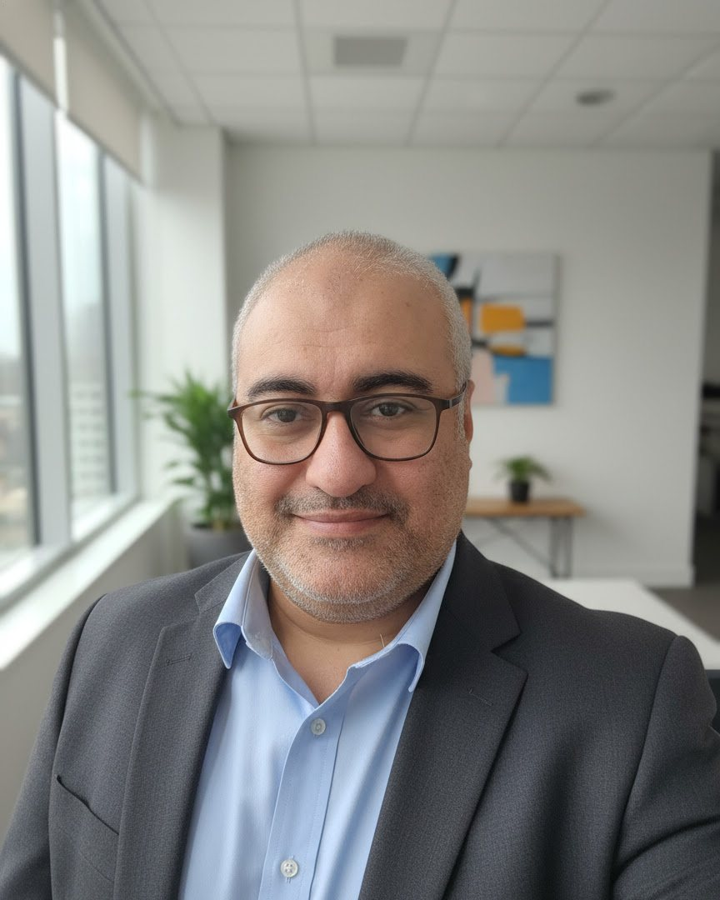

د. معتز محمود رياض استشاري جراحة العظام
تقييم طبي لحالتك، وشرح واضح لخيارات العلاج المتاحة، ومتابعة بعد التقييم أو العلاج وفق احتياج كل مريض.

تنبيه مهم: محتوى هذا الموقع للتوعية العامة، ولا يغني عن التقييم الطبي المباشر. في حالات الطوارئ توجّه فورًا إلى أقرب قسم طوارئ أو اتصل بخدمات الطوارئ المحلية.
عن الطبيب
د. معتز محمود رياض استشاري جراحة العظام. يعرّفك هذا الموقع بالعيادة والخدمات المتاحة، ويقدّم معلومات توعوية عامة تساعدك على فهم حالتك والاستعداد للزيارة.
تقوم الزيارة عادةً على عرض الشكوى بوضوح، ومراجعة الفحوصات والتقارير السابقة، ثم شرح خيارات العلاج الممكنة قبل الاتفاق على خطة المتابعة. وتُحدَّد الخطة المناسبة بعد الفحص المباشر لكل حالة.
الخدمات
تشمل الزيارة تقييمًا للحالة ومناقشة الخيارات المناسبة لها.
-
تقييم آلام العظام والمفاصل
فحص إكلينيكي ومراجعة للأعراض والتاريخ المرضي، مع طلب الفحوصات المناسبة عند الحاجة.
-
إصابات الركبة والكتف
تقييم الإصابات والآلام المرتبطة بالركبة والكتف، وشرح الخيارات المتاحة للتعامل معها.
-
إصابات القدم والكاحل
تقييم الالتواءات والآلام والإصابات التي تؤثر على المشي والحركة اليومية.
-
تقييم ما قبل وبعد الجراحة
شرح الاستعداد قبل أي إجراء جراحي، ومتابعة التعافي بعده وفق تعليمات الطبيب.
الحالات الشائعة
معلومات عامة ومبسّطة للتوعية، وليست تشخيصًا لحالتك. تحتاج كل حالة إلى فحص مباشر وتقييم من الطبيب.
احجز موعد فحص-
خشونة المفاصل
حالة شائعة تتعلق بتآكل غضروف المفصل مع التقدم في العمر أو مع الإجهاد المتكرر، وقد تسبب ألمًا وتيبسًا وصعوبة في الحركة.
-
إصابات الأربطة والغضاريف
تحدث غالبًا نتيجة التواء أو حركة مفاجئة أو إصابة رياضية، وقد يظهر معها ألم وتورم أو إحساس بعدم ثبات المفصل.
-
الكسور والإصابات
قد تنتج عن السقوط أو الحوادث. الألم الشديد أو التورم أو تغيّر شكل الطرف يستدعي تقييمًا طبيًا عاجلًا.
-
آلام العمود الفقري
تتنوع أسبابها بين الإجهاد العضلي ووضعية الجلوس ومشكلات الفقرات والأقراص. إذا صاحبها خدر أو ضعف في الأطراف فيجب تقييمها طبيًا.
-
آلام الكتف
قد ترتبط بالإجهاد أو إصابات الأوتار أو الاستخدام المتكرر للذراع فوق مستوى الرأس، وقد تحدّ من حركة الكتف.
-
مشكلات القدم والكاحل
تشمل الالتواءات وآلام الكعب وتغيّرات شكل القدم، وقد تؤثر على المشي والوقوف لفترات طويلة.
رحلة المريض
ثلاث خطوات بسيطة، من أول تواصل حتى المتابعة.
-
حجز الموعد
تواصل مع العيادة هاتفيًا أو عبر واتساب، أو املأ نموذج الحجز في هذه الصفحة لتصل رسالتك منظمة عبر واتساب.
-
التقييم الطبي
يستمع الطبيب إلى شكواك، ويفحصك، ويراجع الأشعة والتقارير السابقة إن وُجدت.
-
الخطة والمتابعة
تُشرح لك الخيارات العلاجية المناسبة لحالتك، ويُتفق على خطة ومواعيد للمتابعة.
الأسئلة الشائعة
إجابات مختصرة عن أكثر الأسئلة شيوعًا قبل الحجز.
كيف أحجز موعدًا؟
يمكنك الاتصال بالعيادة على 01554764748، أو مراسلتها عبر واتساب، أو تعبئة نموذج الحجز في هذه الصفحة ليُفتح واتساب برسالة جاهزة. لا يُعد الموعد مؤكدًا إلا بعد رد العيادة.
هل أحضر الأشعة والتقارير السابقة؟
نعم، يُفضَّل إحضار كل ما يتعلق بحالتك، مثل:
- الأشعة السينية وأشعة الرنين أو المقطعية وتقاريرها.
- التحاليل الطبية الحديثة.
- تقارير الزيارات أو العمليات السابقة.
- أسماء الأدوية التي تتناولها.
وإن لم تتوفر لديك هذه الأوراق فيمكنك الحضور، وسيحدد الطبيب ما يلزم.
هل يغني هذا الموقع عن زيارة الطبيب؟
لا. المعلومات هنا للتوعية العامة فقط، ولا تُعد تشخيصًا أو وصفة علاجية. تحتاج كل حالة إلى فحص مباشر وتقييم طبي قبل اتخاذ أي قرار علاجي، ولا ينبغي تأجيل العلاج أو تجاهل نصيحة الطبيب بسبب ما تقرؤه هنا.
ماذا أفعل في الحالات الطارئة؟
لا تنتظر موعدًا في العيادة. توجّه فورًا إلى أقرب قسم طوارئ أو اتصل بخدمات الطوارئ المحلية. من الأمثلة على ما لا يحتمل الانتظار:
- ألم شديد بعد إصابة أو سقوط.
- تشوّه واضح في الطرف.
- جرح مفتوح مع احتمال وجود كسر.
- فقدان الإحساس أو العجز عن تحريك الطرف.
الرسائل عبر الموقع أو واتساب قد لا يُرد عليها فورًا، لذلك لا تعتمد عليها في الطوارئ.
هل تُحفظ بياناتي عند استخدام نموذج الحجز؟
لا. الموقع لا يحتوي على خادم لتخزين البيانات؛ ما تكتبه يُستخدم لتكوين رسالة واتساب فقط، ولا تنتقل الرسالة إلى العيادة إلا بعد أن تضغط «إرسال» داخل واتساب.
احجز موعدًا
املأ البيانات الأساسية وسيفتح واتساب برسالة منظمة جاهزة للإرسال إلى العيادة.
- بيانات النموذج تُستخدم لتكوين رسالة واتساب فقط، ولا تُحفظ على الموقع.
- لا يُعد الموعد مؤكدًا إلا بعد رد العيادة.
- في الحالات الطارئة لا تنتظر الحجز، وتوجّه إلى أقرب قسم طوارئ.
التواصل
اتصل بالعيادة أو راسلها عبر واتساب لحجز موعد أو للاستفسار.
-
عنوان العيادة
يُضاف عنوان العيادة هنا
-
مواعيد العمل
تُضاف مواعيد العمل هنا
-
البريد الإلكتروني
يُضاف البريد الإلكتروني هنا
مكان مخصص لخريطة Google Maps